Changes the type and the buttons
Signature and Bloom change the shapes, the type and the controls, not only the colours.
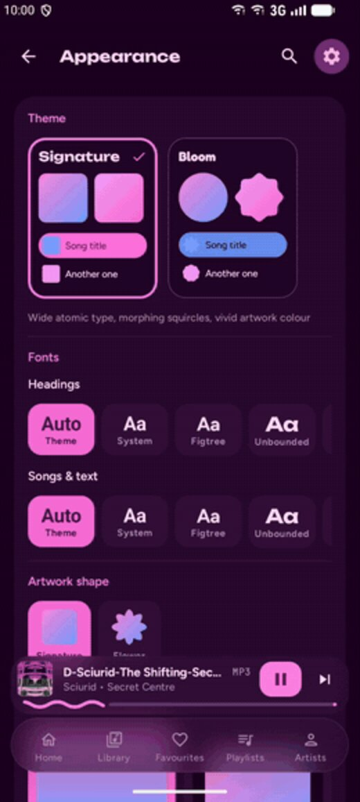
Version 2.0, for Android 7.0 and newer
Ondalune plays your Navidrome, Jellyfin or Subsonic library, and the folders on your phone, through an engine that bends speed, pitch and room.
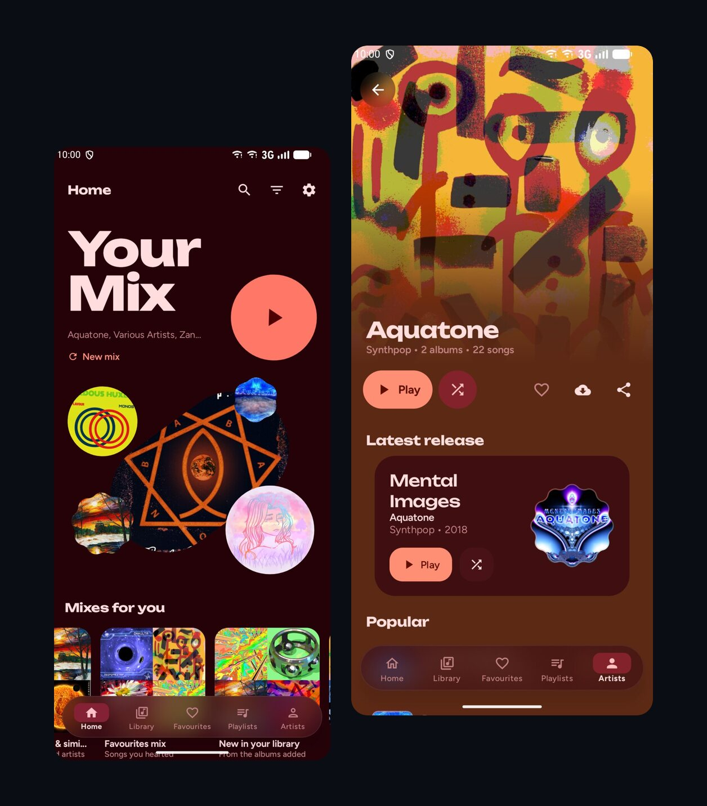
Albums, artists, playlists and folders come straight from your server. Open a song and the player takes over the screen, with the queue, the lyrics and the cover's own colours.
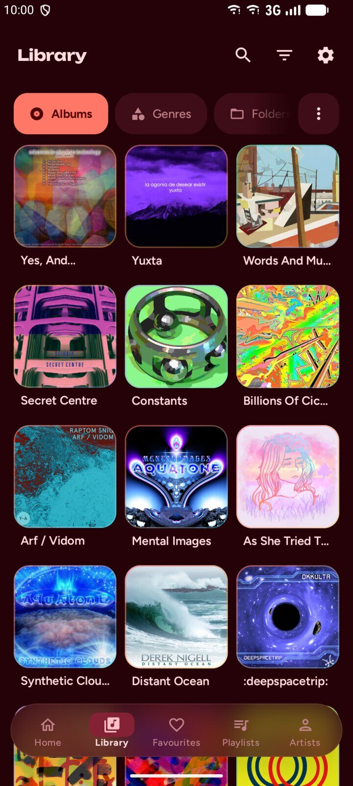
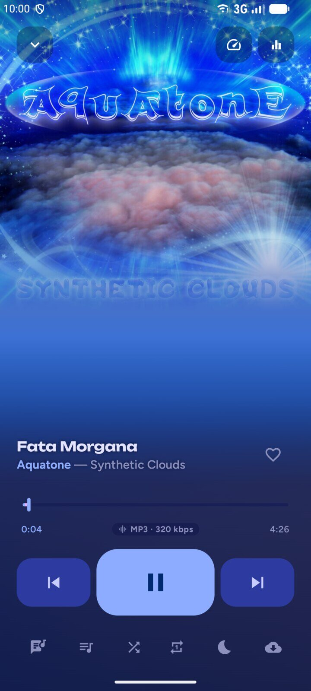
The engine runs on the audio stream itself. Slow a song down and keep it in key, or let the pitch fall with the speed the way a tape deck does.
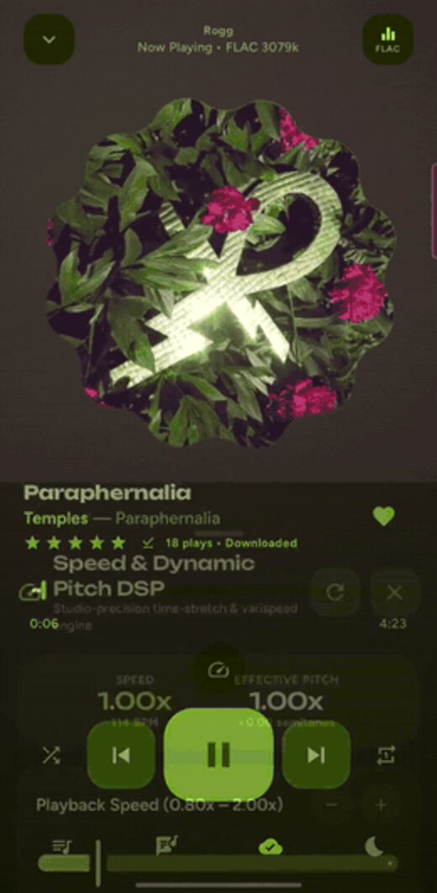
Colours are read from the artwork itself, region by region, so the player, the background, the lock screen and the notification all match what is playing. A black-and-white cover gets a black-and-white theme instead of a guessed one.
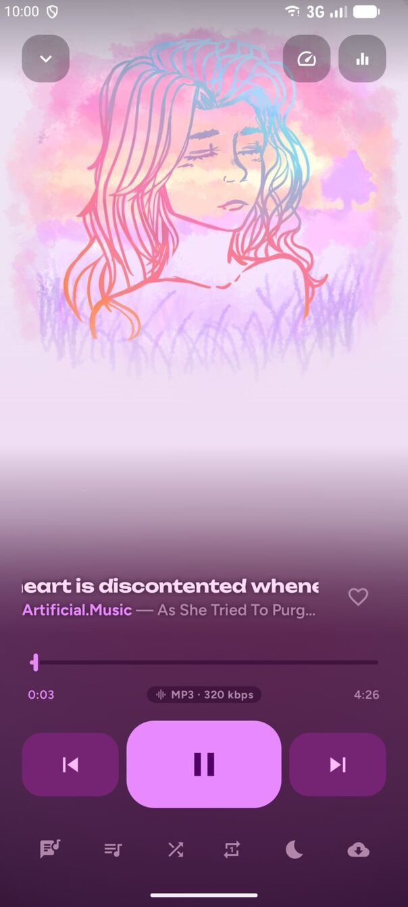
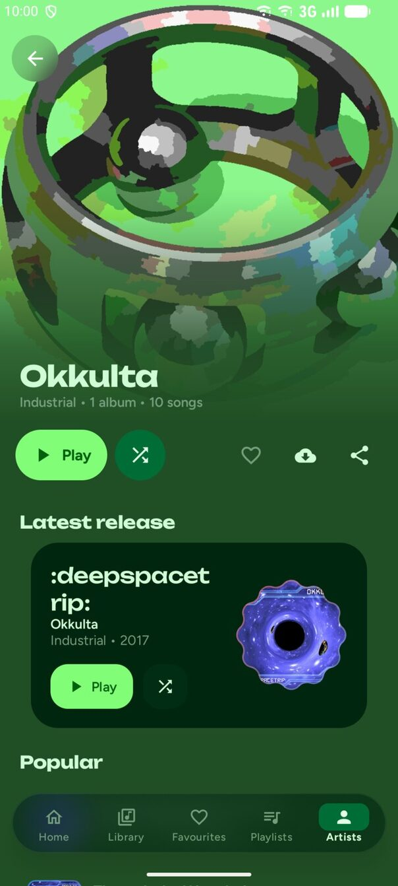
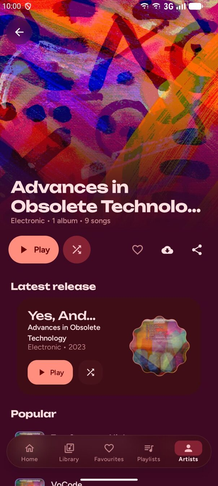
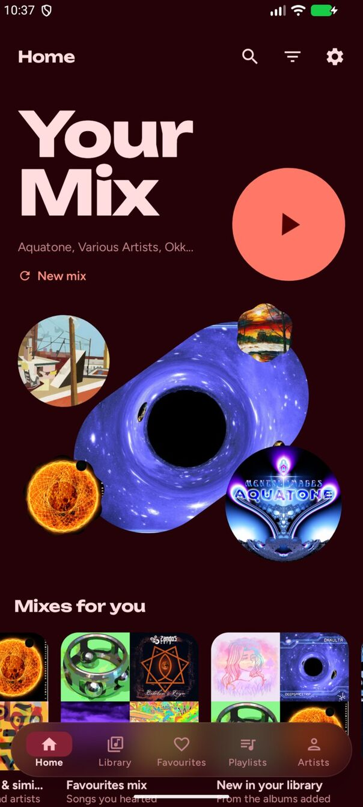
No ads, no trackers, no account, and no analytics of any kind. Ondalune is free software under GPL-3.0. Server passwords are encrypted on the phone with a key from Android's hardware-backed Keystore.
Add more than one server and switch between them. Folders you pick on the phone join the same library, and play without a connection.
Signature and Bloom change the shapes, the type and the controls, not only the colours.

Every page can take its colours from the song that is playing, or keep one steady palette.
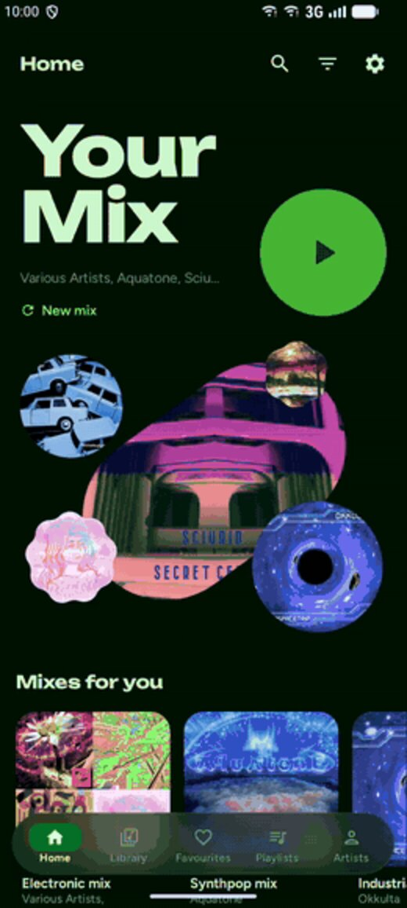
Nine typefaces, picked separately for headings and for song text.
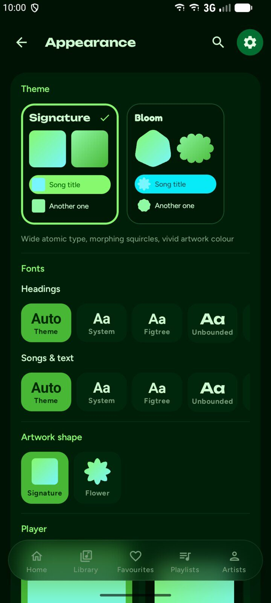
Drag the home sections into the order you want, and hide the ones you never open.
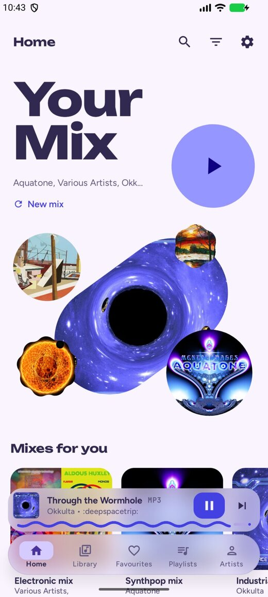
Anything else is in the readme, and bugs go in the issue tracker.
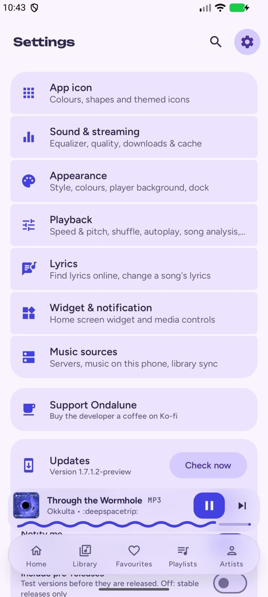
Yes, or music in folders on the phone. Ondalune has no catalogue of its own: it plays what your server already holds.
Navidrome, Gonic, Airsonic-Advanced and anything else that speaks the Subsonic API, plus Jellyfin. It uses OpenSubsonic extensions where the server offers them.
Not yet. The APK is on the GitHub releases page.
Yes. Downloads sit privately inside the app, and folders on the phone need no connection. From a folder it reads FLAC, MP3, AAC, ALAC, Ogg Vorbis, Opus and WAV.
Nothing. Ondalune is free software under GPL-3.0, with no ads and no account.